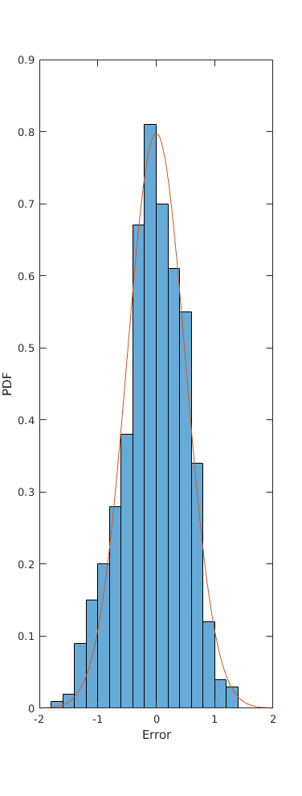
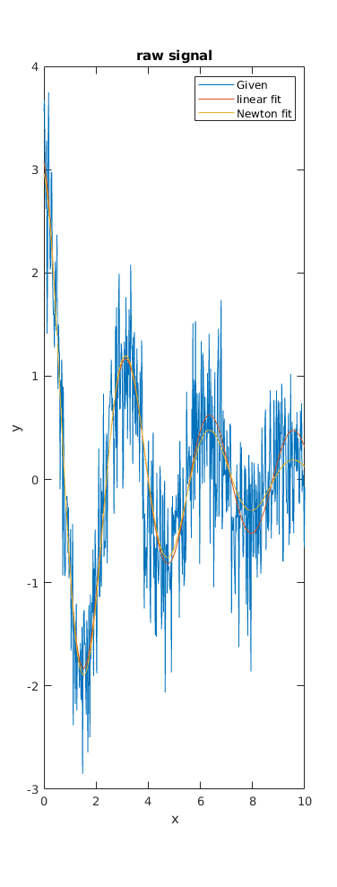

global x; global y; global sigma; load hw3.mat x y y_a_log N = size(x, 1); G = [ones(N, 1) x x.^2]; m = inv(G' * G) * G' * y_a_log; y_hat_lin = real(exp(G * m)); sigma = 0.5; err = y - y_hat_lin; chi2 = sum(err.^2) / sigma^2; nu = N - 6; display("Linear fit:") fprintf("Goodness of fit: %g\n", chi2) fprintf("Degrees of freedom: %g\n", nu) chi2_stds = (chi2 - nu) / sqrt(2 * nu); fprintf("Chi2 standard deviations from mean: %g\n", chi2_stds) % Newton's Method function [exit_code, x_best, costs, xs] = newton(f, grad, hess, tol, N_max, x0) xs = [x0]; costs = [f(x0)]; for i = 1:N_max x1 = x0 - inv(hess(x0)) * grad(x0)'; xs = [xs x1]; costs = [costs f(x1)]; if norm(x1 - x0) < tol x_best = x1; exit_code = 0; return end x0 = x1; end exit_code = 1; x_best = x1; return end function out = y_hat(z, w) global x out = real(z * exp(w * x)); end function g = grad_y(z, w) global x g = real([exp(w * x), z * x .* exp(w * x)]); end function H = hess_y(z, w) global x N = size(x, 1); H = [ zeros(N, 1) (x .* exp(w * x)) ]; % Create Nx2 array first H(:,:,2) = [ x .* exp(w * x) z * x.^2 .* exp(w * x) ]; H = real(H); end function c = f(m) global x; global sigma; global y; z = m(1, 1); w = m(2, 1); c = sum((y_hat(z, w) - y).^2) / sigma^2; end function g = grad_f(m) global sigma; global y; z = m(1, 1); w = m(2, 1); g = 2 / sigma^2 * (y_hat(z, w) - y)' * grad_y(z, w); end function H_f = hess_f(m) global sigma; global y; z = m(1, 1); w = m(2, 1); g = grad_y(z, w); H = hess_y(z, w); t = squeeze(tensorprod((y_hat(z, w) - y), H, 1, 1)); gg = g' * g; H_f = 2 / sigma^2 * (gg + t); end tol = 1e-6; N_max = 100; x0 = [exp(m(1, 1)); m(2, 1)]; [exit_code, x_best, costs, xs] = newton( ... @f, @grad_f, @hess_f, tol, N_max, x0); z = x_best(1, 1); w = x_best(2, 1); figure() histogram(err, "Normalization", "pdf") xlabel("Error") ylabel("PDF") hold on; x_pdf = linspace(-2, 2); fx = normpdf(x_pdf, 0, sigma); plot(x_pdf, fx) % % Raw signal figure() plot(x, y, x, y_hat_lin, x, y_hat(z, w)) xlabel("x") ylabel("y") legend("Given", "linear fit", "Newton fit") title("raw signal") % % % y_a_log on complex plane % figure() % plot(real(y_a_log), imag(y_a_log), 'b', ... % real(G * m), imag(G * m), 'r'); % xlabel("Real") % ylabel("Imaginary") % legend("Original", "fit") chi2 = f(x_best); nu = N - 4; display 'Newtons Method:' fprintf("Goodness of fit: %g\n", f(x_best)) fprintf("Degrees of freedom: %g\n", nu) chi2_stds = (chi2 - nu) / sqrt(2 * nu); fprintf("Chi2 standard deviations from mean: %g\n", chi2_stds)
"Linear fit:" Goodness of fit: 567.184 Degrees of freedom: 494 Chi2 standard deviations from mean: 2.3283 Newtons Method: Goodness of fit: 561.081 Degrees of freedom: 496 Chi2 standard deviations from mean: 2.06633

